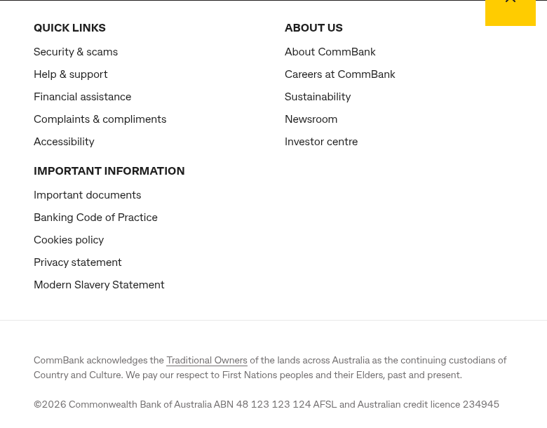
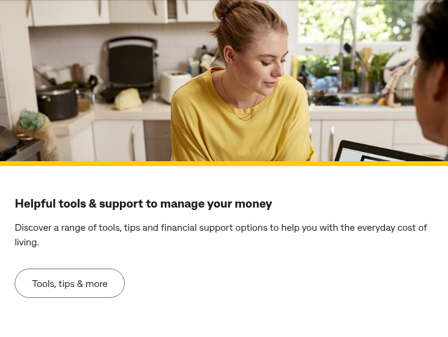
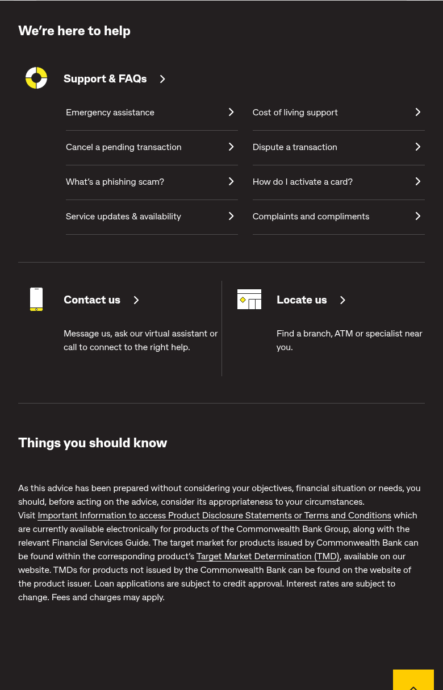
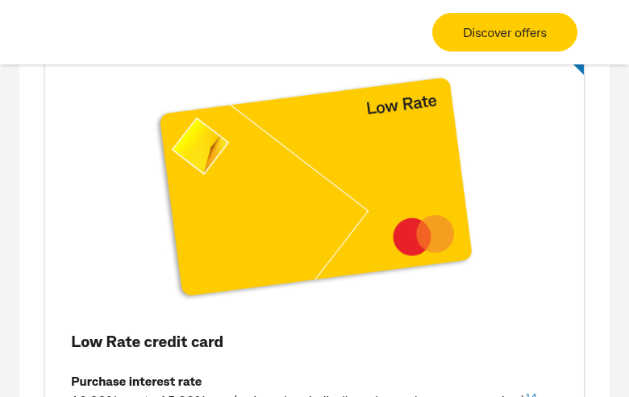
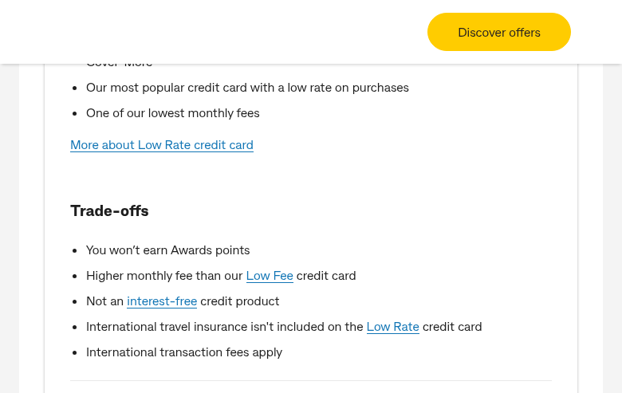

Site: https://www.commbank.com.au/ Date: 24 February 2026 Current CMS: Adobe Experience Manager (AEM/CQ) Target Platform: Adobe Edge Delivery Services (AEM Sites)
Screenshot — Header:
Screenshot — Footer:

Screenshot — Hero Banner:

Screenshot — Article Cards (4-column):
Screenshot — Support & Help Section:

Screenshot — Product Card (Credit Cards):

Screenshot — Product Card Detail (Trade-offs):

support.{category}.{article}.html. Standardized format suitable for bulk import.window.adobeDataLayer + window.dataLayer), custom page-level sara.page object. Tracks all page views, events, and user interactions.DC-10099469, Floodlight tags at ad.doubleclick.net. Includes noscript fallback pixels.mboxCreate, mboxDefine, CQ_Analytics.TestTarget for server-side and client-side A/B testing. Multiple mbox containers on high-value pages (hero sections, navigation)./etc/cloudsettings/default/contexthub. Client-side CQ_Analytics.SegmentMgr for real-time user segmentation.commbank.com.au/innovate/switchblade/v0/rules/functions/evaluate/. Real-time decisioning for content personalization./cdn-cgi/challenge-platform/. Includes window.__CF$cv$params with request tokens.my.commbank.com.au/netbank/NetBankIdentity/pub/api/Identity. Multi-portal login (NetBank, CommBiz, CommSec) with MFA via CommBank app push.commbank.com.au/digital/search/v0/. Powers the global search overlay and support article search.mobile-app-redirect.commbank.com.au/support/messaging. App-based (not web-embedded widget).assets.commbank.com.au/is/image/ with dynamic format parameters ($W1956_H1216$, $W375_H200$).cba.wd3.myworkdayjobs.com/CommBank_Careers.cba.avature.net/ourtalentcommunities.qantas.com/joinffcbahomeloan.oce.azureedge.net/livechatwidget detected on rates pages. Likely for home loan specialist chat.CB-HL-HERO, CB-HL-LENDERPROFILE), product page CTAsdpo) vs. new customers (full application nrco). URL convention varies by product. Requires careful link mapping and potentially authenticated vs. unauthenticated routing.#_KEY_LOAN_AMOUNT_# suggest server-side rendering. Must be rebuilt as EDS blocks or embedded as iframes.?ei= Analytics Tracking Parameters?ei= analytics attribution parameter following a structured naming scheme. These must either be preserved, remapped, or replaced with an equivalent tracking solution in EDS.Phase A (Weeks 1–8): Foundation — Design system, global components (header/footer/nav), core blocks (hero, cards, product grid), automated migration of ~350 support/editorial/newsroom pages.
Phase B (Weeks 6–14): Product Pages — Product category, product detail, comparison templates. Semi-automated migration of ~100 product pages. Calculator embeds (iframe approach initially).
Phase C (Weeks 10–20): Complex Pages — Homepage, marketing funnels, personalized pages. Integration work (analytics, search, auth). Calculator rebuilds.
Phase D (Weeks 16–24): QA, UAT, Launch — Full regression testing, accessibility audit, performance optimization, stakeholder review, phased cutover.
commbank-homepage-full.pngcommbank-banking-category.pngcommbank-credit-cards.pngcommbank-rates.pngcommbank-support.pngcommbank-brighter-editorial.pngcommbank-about-us.pngblock-header-nav.pngblock-hero-banner.pngblock-article-cards.pngblock-support-help.pngblock-footer.pngblock-product-card-view.pngblock-product-card-detail.pngReport generated from live site analysis on 24 February 2026.